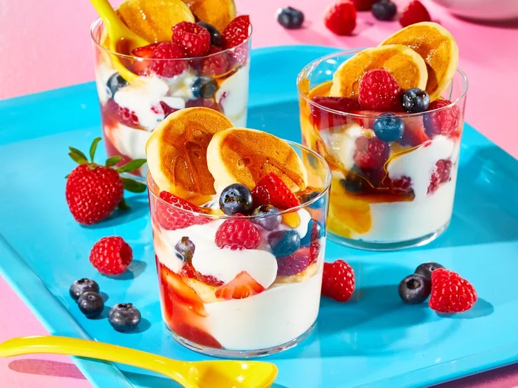

Mini Pancake Parfait
Teeny pancakes get the parfait treatment when they are layered with yogurt, mixed fruit, and pancakes' bestie: maple syrup.
- Total Time: 10 minutes
- Prep Time: 5 minutes
- Cook Time: 5 minutes
- Serving: 1
Ingredients you'll need:
- 2/3 cup vanilla yoghurt
- 1 tablespoon jam or fruit preserves
- 5 mini pancakes
- 1 cup mixed berries
- 1 teaspoon maple syrup, or to taste
Directions:
- For each parfait layer 1/3 cup vanilla yogurt, 1 tablespoon jam or fruit preserves, 3 mini pancakes, and 1/2 cup mixed berries in a wide-mouthed glass or jar. Repeat yogurt and berry layers. Add 2 additional pancakes and drizzle with maple syrup.
Nutrition
The table below shows the nutritional values per serving.
| Calories | 448kcal |
| Carbs | 77g |
| Protein | 14g |
| Fat | 10g |
| Sugar | 43g |